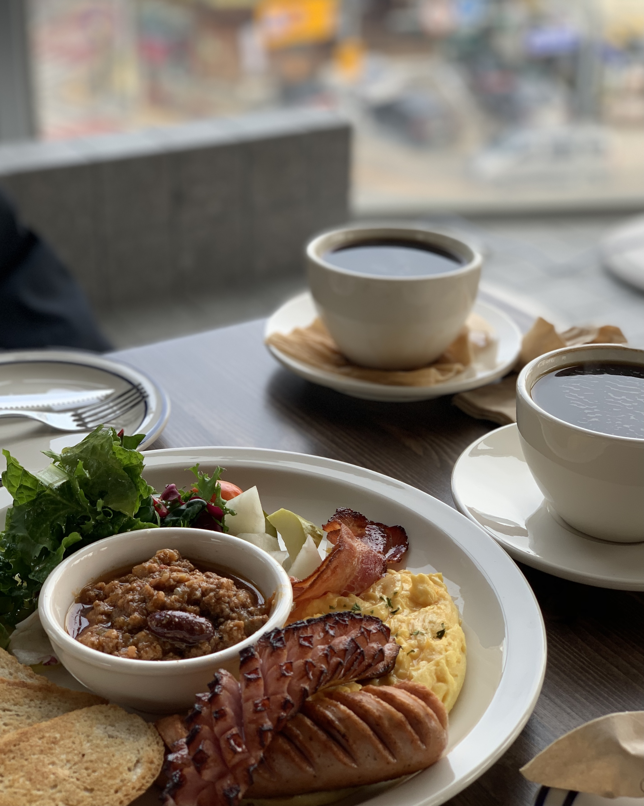
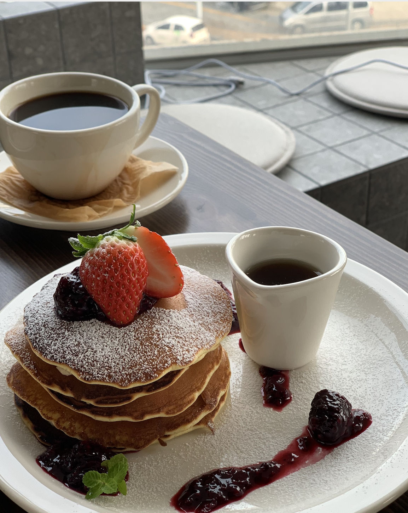
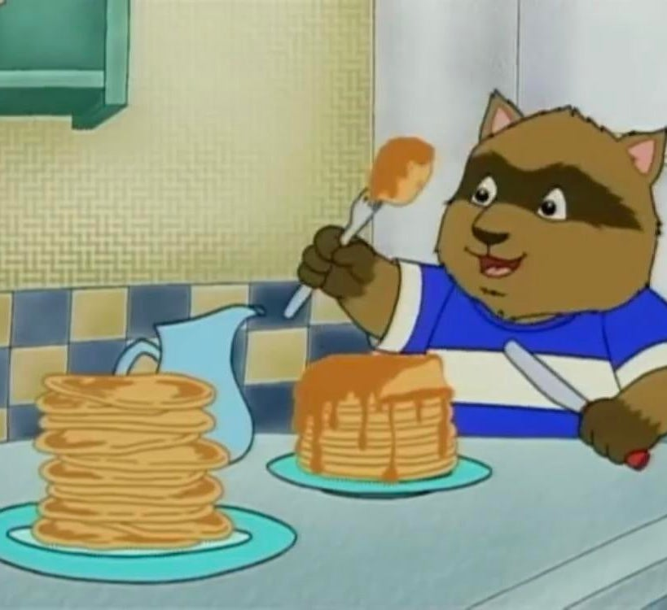
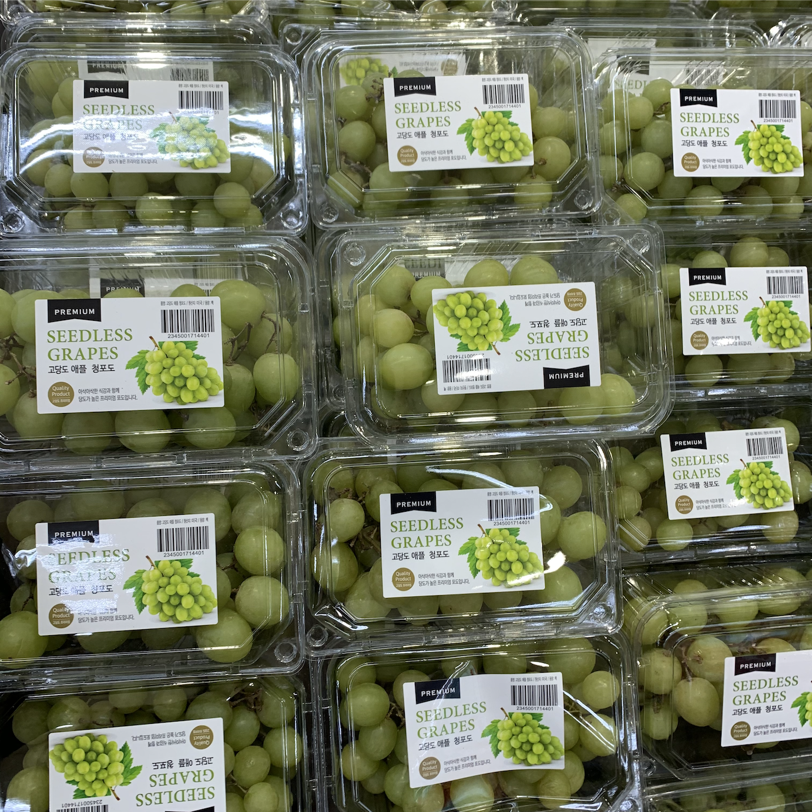
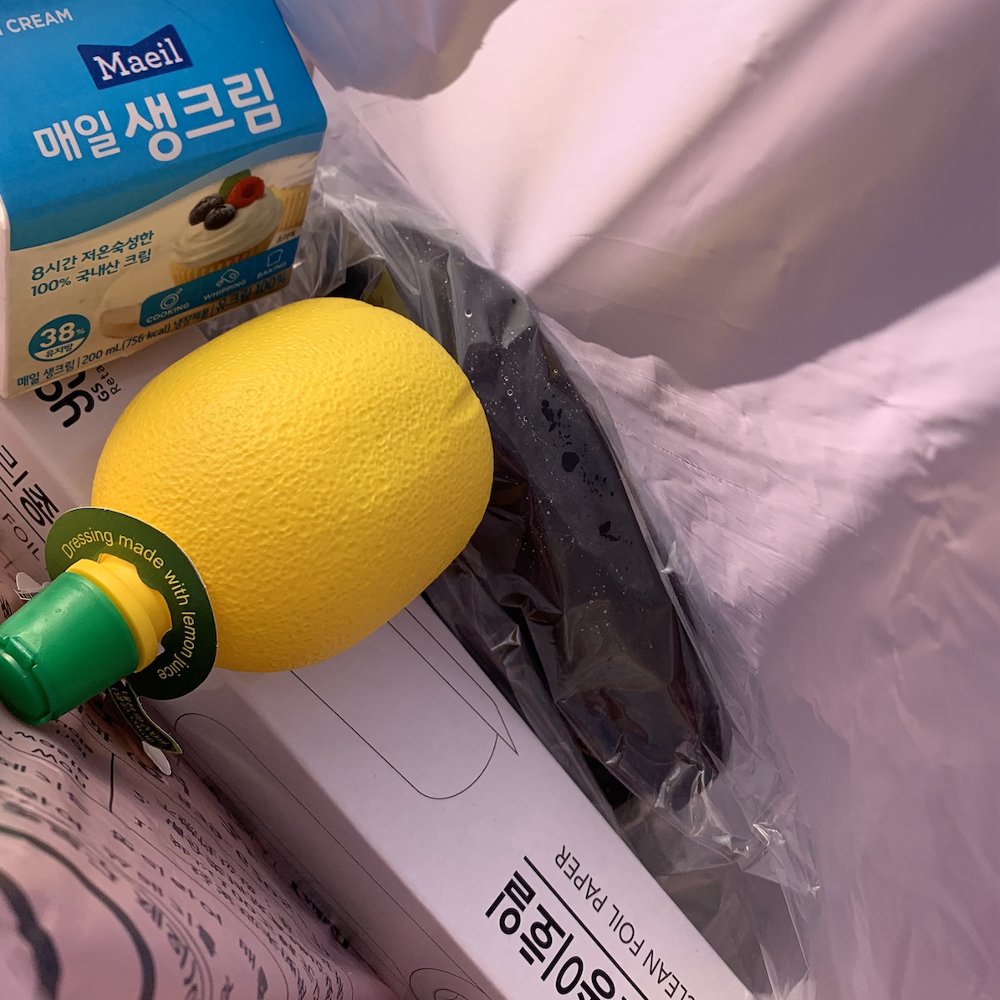

Timeline
  
허세님과의 성공적인 비즈니스 미팅^^ 어릴 때 몇년동안 매일 돌려보던 애니메이션에서 주인공이 팬케이크 잔뜩 쌓아놓고 잘라 먹는 거 너무 따라해보고 싶었는데, 로망 실천했다 (o´〰`o)
사람도 거의 없고 이 시국 아주 성공적인 식사였다 허세님 맨날 오후 출근 시켰으면 좋겠당


텃밭 들러서 가지 따다가 가는 길에 애플청포도 있길래 찍어뒀다 집에 포도 있는 줄 알고 안 샀는데 집에 와서 보니 포도가 다 떨어졌더라구?
근데 진짜 신기한 건 엄마가 오늘 집 오는 길에 저 애플청포도 따오심ㅋㅋㅋㅋㅋ
가지에 생크림 얹고 레몬즙 뿌린 다음에 종이호일에 올려서 오븐에 구워먹으면 을매나 맛있게요~~~
피아노를 왜 10분밖에 치지 못했느냐면.. 쑨니가 일찍 일어나서 공부할 거라고 풍악을 멈추라고 해서.. 내일 열심히 해야지
어제 만든 거 틀부터 뜯어고치고 싶어져서 Java 공부는 어림도 없었고 Css 마저 더 공부했다
하고 싶은 건 많은데 이해하는 건 느리고 이해해도 내가 하면 자꾸 에러뜨고 아직 갈 길이 멀구만! 보기에는 달라진 게 없어보여도 차근차근 배우고 있습니다
이거 성실하게 일하고 있다고 어필하는 거 맞아요 허세님
와 훨씬 예뻐졌어! 핸드폰에서도 예쁘게 보였으면 좋겠다 ㅎ